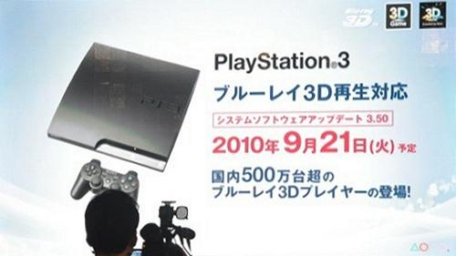

🏠 首頁
📁 網友哈啦區
PS3 韌體更新 3.50 九月二十一登場
👤 aoifh
🕐 2010-09-17 00:22:58

附件: 350+ps3_frimware.jpeg
2010年東京電玩展盛大展開，SONY公佈PS3 韌體更新 3.50 九月二十一登場，將支援 3D Blu-ray 電影播放。確定的日期九月二十一日，屆時日本「國內將有超過五百萬台的 Blu-ray 3D 播放器登場！」。因為是在日本發的消息，目前還無法得知是否將會全球同步。